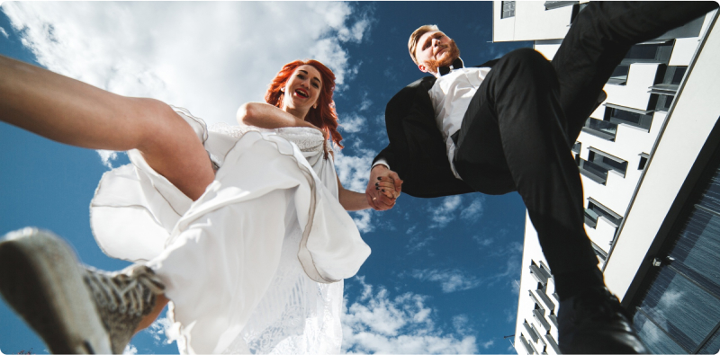

Exploring Different Photography
Styles for Your Special Day
Your wedding day is one of the most important days of your life, and you want every moment to be captured perfectly. But with so many different photography styles out there, how do you choose the one that's right for you? In this article, we'll explore various photography styles to help you find the perfect aesthetic for your special day, ensuring that your photos reflect your unique personality and vision.
Traditional Wedding Photography: Honoring Timeless Elegance
Traditional wedding photography focuses on capturing classic, posed portraits of the bride, groom, and wedding party. These photos are often taken in a formal setting, with careful attention paid to composition and lighting. While traditional wedding photography may feel more staged, it allows for beautiful, timeless images that will never go out of style.
Photojournalistic Wedding Photography: Capturing Candid
Moments
Photojournalistic wedding photography, also known as documentary or reportage style, takes a more candid approach to capturing your wedding day. Instead of posing for photos, you and your guests are photographed as events unfold naturally. This style aims to capture the genuine emotions and spontaneous moments that make your wedding unique, resulting in a more authentic and storytelling approach to your wedding album.
Fine Art Wedding Photography: Infusing Creativity and Romance
Fine art wedding photography takes inspiration from the world of art, aiming to create images that are not only beautiful but also artistic. This style often incorporates creative composition, dramatic lighting, and artistic post-processing techniques to produce stunning, ethereal images. Fine art wedding photography is perfect for couples who want their wedding photos to resemble works of art, with a focus on capturing the beauty and romance of their special day.
Vintage Wedding Photography: Nostalgia and Timeless Charm
Vintage wedding photography evokes a sense of nostalgia by emulating the look and feel of old-fashioned photographs. This style often incorporates vintage cameras, film, and editing techniques to create images that have a soft, romantic, and timeless quality. Vintage wedding photography is perfect for couples who want to add a touch of old-world charm to their wedding photos, capturing the timeless beauty of their love story.
Modern Wedding Photography: Embracing Contemporary Trends
Modern wedding photography embraces the latest trends and techniques in photography, resulting in fresh, contemporary images. This style often incorporates creative lighting, unique compositions, and innovative editing techniques to create bold, striking images that stand out. Modern wedding photography is perfect for couples who want their wedding photos to reflect their modern sensibilities and unique personalities, capturing the energy and excitement of their special day in a fresh and stylish way.
Conclusion: Finding Your Perfect Style
When choosing a photography style for your wedding day, it's essential to consider your personal preferences, the overall aesthetic of your wedding, and the style of photography that resonates with you. Whether you prefer the timeless elegance of traditional wedding photography, the candid moments captured by photojournalistic style, the artistic flair of fine art photography, the nostalgic charm of vintage photography, or the contemporary trends of modern photography, there's a style out there that's perfect for you. By exploring different photography styles, you can find the one that best reflects your unique love story and ensures that your wedding photos are a true reflection of your special day.